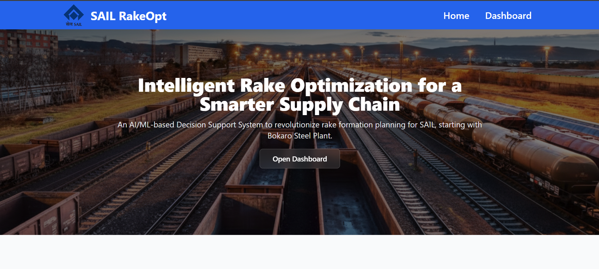
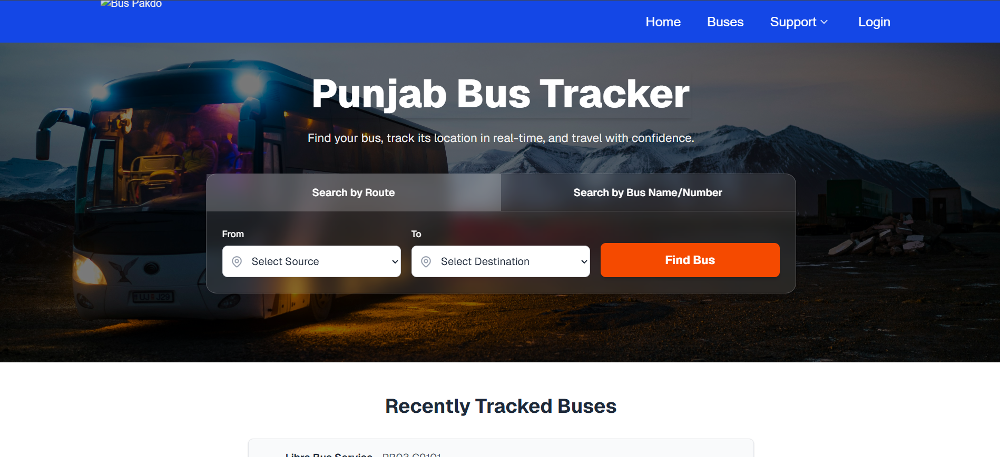
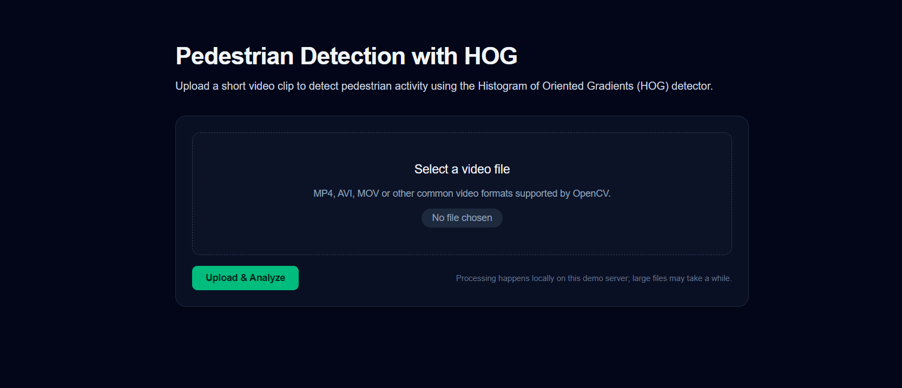

2022 – Present
B.Tech in 3D Animation & Graphics · B.P. Mandal College of Engineering
Integrating immersive graphics, animation, and full-stack development.
Hi, I'm Ankit Kumar. I bridge the gap between complex engineering and immersive digital art.
I’m Ankit Kumar — a developer and visual creator who understands products from multiple dimensions.
With experience in development, graphic design, 3D modeling, and animation, I approach every project with a complete perspective — from structure and performance to visuals and motion. This allows me to solve problems not just technically, but creatively and strategically.
I don't just build websites — I craft immersive digital experiences that look exceptional, perform seamlessly, and communicate clearly. My ability to combine technology with design thinking helps me create all-in-one solutions that feel polished, modern, and purpose-driven.
I enjoy working in fast-moving startup environments where ideas need both innovation and execution. For me, building is not just about making things work — it’s about making them remarkable.
A timeline of growth, exploration, and continuous learning.
Integrating immersive graphics, animation, and full-stack development.
Strengthened analytical thinking through physics and mathematics.
Built a strong academic foundation.
The instruments I use to craft digital experiences.
An AI-powered system designed for SAIL. It generates optimal railway rake plans, significantly cutting freight and demurrage costs by optimizing load clubbing, sequencing, and constraints at the Bokaro Steel Plant.


A real-time bus tracking application for Punjab. Users can search by route or number, view live GPS locations, and receive accurate ETAs to dramatically simplify their daily commutes.
A computer vision web application that detects pedestrians in video feeds utilizing HOG descriptors and OpenCV. Users can upload clips and receive instant visual detections mapped over the footage.

Currently looking for new opportunities.